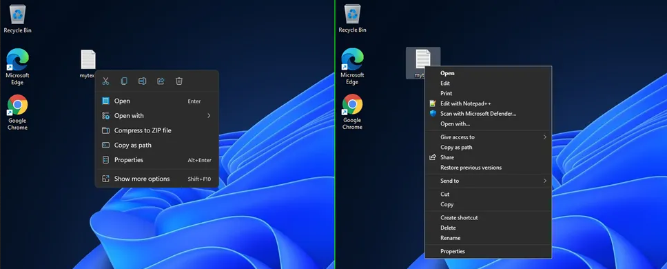

Revertendo para o antigo menu de contexto no Windows 11
Pra resolver isso é simples:
Abra o regedit.exe
Crie a seguinte chave:
[HKEY_CURRENT_USER\Software\Classes\CLSID\{86ca1aa0-34aa-4e8b-a509-50c905bae2a2}\InprocServer32]A entrada (Padrão) em InprocServer32 não deve estar vazia! Basta dar 2 cliques e depois selecionar OK para solucionar isso.
Reinicie (ou deslogue e logue novamente) ou feche o explorer.exe.
No caso as chaves que precisam ser criadas são:
{86ca1aa0-34aa-4e8b-a509-50c905bae2a2}
InprocServer32
Créditos ao CHEF-KOCH MICROBLOG